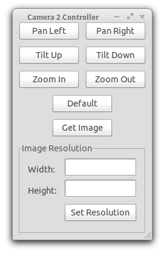
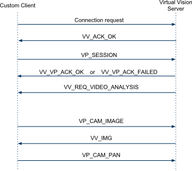

A Distributed Virtual Vision Simulator
Wiktor Starzyk and Faisal Z. Qureshi
Synopsis
Realistic virtual worlds can serve as laboratories for carrying out camera networks research. This unorthodox "Virtual Vision" paradigm advocates developing visually and behaviorally realistic 3D environments to serve the needs of computer vision. Our work on high-level coordination and control in camera networks is a testament to the suitability of virtual vision paradigm for camera networks research. The prerequisite for carrying out virtual vision research is a virtual vision simulator capable of generating synthetic imagery from simulated real-life scenes. Here we present a distributed, customizable virtual vision simulator capable of simulating pedestrian traffic in a variety of 3D environments. Virtual cameras deployed in this synthetic environment generate synthetic imagery—boasting realistic lighting effects, shadows, etc.—using the state-of-the-art computer graphics techniques. Our virtual vision simulator is realized as a collection of modules that communicate with each other over the network. Consequently, we can deploy our simulator over a network of computers, allowing us to simulate much larger networks and much more complex scenes then is otherwise possible.
How to get it for your own research?
We have released the our virtual vision simulator to the community under GNU General Public License V3.0 in order to support virtual vision and camera networks research. Please feel free to download the code from Github repository and use it for your own research. Please send us bug fixes and improvements, so we may integrate them into the virtual vision simulator. Notice that if you want to use parts of our code in a commercial product they will need to comply with the GPLv3 license (all derived products are required to be open source).
Thanks to (annevanrossum@gmail.com) for helping us with the above wording.
Instructions about how to download, install and use our virtual vision simulator are provided below.
Caveat
We purchased pedestrian models (textures and motion capture data) from aXYZ Design, which hold the copyright to the pedestrian models. Licensing prevents us from distributing these models. You will have to purchase these models for our simulator to work properly.
If you are brave you may be able to use your own pedestrian models to work with our simulator. The simulator simply needs a textured human with animation data. If you plan to use your own pedestrian models, let us know. Time permitting we might be able to work together to get things rolling.
Citation
Please cite the following publications when using our simulator for research. Thank you!
"Smart Camera Networks in Virtual Reality," F.Z. Qureshi, D. Terzopoulos, Proceedings of the IEEE, 96(10), October, 2008, 1640—1656, (Special Issue on "Smart Cameras").
"Software laboratory for camera networks research," W. Starzyk, F.Z. Qureshi, IEEE Journal on Emerging and Selected Topics in Circuits and Systems (special issue on "Computational and Smart Cameras), vol. 3, iss. 2, pp. 284-293, 2013.
Publications
This simulator is introduced in the following publications.
"Software laboratory for camera networks research," W. Starzyk, F.Z. Qureshi, IEEE Journal on Emerging and Selected Topics in Circuits and Systems (special issue on "Computational and Smart Cameras), vol. 3, iss. 2, pp. 284-293, 2013.
Projects that used this Simulator
We used the current simulator to carry out camera networks research, which lead to the following two publications.
"Learning Proactive Control Strategies for PTZ Cameras,'' F.Z. Qureshi, W. Starzyk, Proc. 5th ACM/IEEE International Conference on Distributed Smart Cameras (ICDSC 11), Ghent, Belgium, August, 2011, 1—6.
"Multitasking Smart Cameras for Intelligent Video Surveillance Systems,'' W. Starzyk, F.Z. Qureshi, Proc. 8th IEEE International Conference on Advanced Video and Signal-Based Surveillance (AVSS 11), Klagenfurt, Austria, August, 2011, 1—6.
Videos
Multi-tasking PTZ Cameras
A video showing our simulator in action tracking pedestrians using a Vision Processing Client developed by Adam Domurad. [multitasking.wmv (49MB)]
Camera Handoffs
A video showing a Visual Processing Client connected to a static wide field of view camera handing off a pedestrian to another Visual Processing Client connected to an active pan\tilt\zoom camera. [handoff.wmv (3.7MB)]
Installation
Get the code from https://github.com/vclab/virtual-vision-simulator.
Linux
The system is developed on Ubuntu 10.10 using packages from the ubuntu repository. The following packages have to be installed:- python2.6
- python-numpy 1.3.0 http://sourceforge.net/projects/numpy/files/NumPy/1.3.0/
- python-matplotlib 0.99.3 http://sourceforge.net/projects/matplotlib/files/matplotlib/matplotlib-0.99.3/
- python-opencv 2.1.0 http://sourceforge.net/projects/opencvlibrary/files/opencv-unix/2.1/
- python-wxgtk2.8 2.8.11 http://packages.ubuntu.com/search?keywords=python-wxgtk2.8
- panda3d 1.7.2 from http://www.panda3d.org/download.php?platform=ubuntu&version=1.7.2&sdk
Windows
- Install all of the libraries provided in the depenencies/windows folder. Make sure you install Panda3D first.
- Copy cv.lib and cv.pyd from the OPENCV_DIR\Python2.6\Lib\site-packages\ directory to the PANDA3D_DIR\python\Lib\site-packages\ directory.
- OPENCV_DIR is your opencv directory. By default this is C:\OpenCV2.1
- PANDA3D_DIR is your panda3D directory. By default this is C:\Panda3D-1.7.2
- Make sure OPENCV_DIR\bin is added to your Path
Usage
All of the provided applications are located in the src folder.Simulator
Execute: python 3D_Simulator.py [options] Where options are the options listed below.NOTE: specifying a configuration directory is mandatory.
Options:
-d directory Set the directory where the config files are located
-p port Set the port the server should run on (default is 9099)
-a Set the mode of the simulation controller to automatic (only used when server not needed)
-s A Sync session is used to control the time
-h Print this help message and exit
--debug Show debug messages
- left and right arrow keys switch between different cameras
- escape exits the applications
- i displays information about the simulator including ip address, port and camera types
Sync Client
Execute: python Sync_Client.py [options] ip_address:port ip_address:port ...Where ip_address:port is replaced with the ip address and port of all the simulators
Options:
--debug Show debug messages
Sample Client
Execute: python sample_client.py [options]Options:
- p port Set the port of the virtual world - a ip_address Set the ip address of the virtual world - s Save the images received from the server - h Print this help message and exit --debug Show debug messages
A screenshot of our sample client which gives a user control over a camera.
Getting Started Guide
Please see the Getting Started Guide for step by step instructions on how to use our Virtual Vision Simulator.Configuring a Scenario
A scenario is made up of three config files which allow you to configure the
scene, the cameras and the pedestrians. These three files must be called scene.xml,
cameras.xml and pedestrians.xml and must be placed in a single folder which can be
specified using the -d flag.
scene.xml
The scene.xml file is used to configure the 3D models and lights that make up the scene. A sample is provided below.
<?xml version="1.0" encoding="UTF-8"?>
<scene>
<models>
<model path="../../media/scenes/office_floor/office_floor.egg" scale="25" pos="0 0 0" hpr="0 0 0" has_lighting='1'/>
<model path="../../media/scenes/office_floor/skybox.egg" scale="25" pos="0 0 50" hpr="0 0 0" has_lighting='0'/>
</models>
<lights>
<light type="ambient" color="0.8 0.8 0.8 1.0"/>
<light type="spotlight" casts_shadow="1" pos="-575 150 100" fov="170" exponent="1.5"/>
<light type="spotlight" casts_shadow="1" pos="-575 -150 100" fov="170" exponent="1.5"/>
</lights>
</scene>
Model
The following attributes must be set for all model tags:- path: The path to the 3D model relative to the scene.xml file
- scale: The scale of the model
- hpr: The heading, pitch and roll of the model in degrees (i.e. "180 0 0")
- has_lighting: Set to 1 if the model is affected by lighting.
Ambient Light
Mandatory Attributes- type: ambiant
- color: the color of the ambient light in the form of RGBA values between 0 and 1 (i.e. "0.8 0.8 0.8 1.0")
Spotlight
Mandatory Attributes- type: spotlight
- pos: The position of the light in x, y, z coordinates (i.e. "300 150 100")
- fov: The field of view angle of the light in degrees
- casts_shadow: 1 if the light casts shadows, 0 otherwise
- shadow_caster: The size of the shadow caster. Values should be multiples of 2. (i.e. "2048 2048")
- pitch: The pitch of the light in degrees. The default is -90.
- near: The near plane of the light
- far: The far plane of the light
- exponent: Sets the exponent that controls the amount of light falloff from the center of the spotlight
- color: The color of the light in the form of RGBA values between 0 and 1 (i.e. "0.5 0.5 0.5 1.0")
Directional Light
Mandatory Attributes- type: directional
- pos: The position of the light in x, y, z coordinates
- hpr: The heading pitch and roll of the model in degrees
- casts_shadow: 1 if the light casts shadows, 0 otherwise
- shadow_caster: The size of the shadow caster. Values should be multiples of 2. (i.e. "2048 2048")
- near: The near plane of the light
- far: The far plane of the light
- color: The color of the light in the form of RGBA values between 0 and 1 (i.e. "0.5 0.5 0.5 1.0")
- film_size: A rectangle that defines the region that will be affected by the light. (i.e. "512 512")
cameras.xml
The cameras.xml file is used to configure the cameras. The sample provided below shows all of the options that are currently available. Most of these options should be self explanatory however, we would like to point out that the id of each camera must be unique and the default_direction is the direction the camera faces when the pan and tilt values are 0.
<?xml version="1.0" encoding="UTF-8"?>
<cameras>
<camera type="rc_camera">
<color>0 255 0</color>
<id>1</id>
<position>-575 90 -320</position>
<up_vector>0 1 0</up_vector>
<near_plane>1</near_plane>
<far_plane>100000</far_plane>
<constraints>
<fov_limits>30 100</fov_limits>>
<pan_limits>-30 30</pan_limits>>
<tilt_limits>-30 30</tilt_limits>
</constraints>
<default_direction>0 -2 4</default_direction>
<default_fov>100</default_fov>
<fov>100</fov>
</camera>
</cameras>
pedestrians.xml
The pedestrians.xml file is used to configure all of the pedestrians and their trajectories.
<?xml version='1.0' encoding='UTF-8'?>
<pedestrians>
<pedestrian character='CMan0011' texture='CMan0011_3.png' pos='-780 0 -50' scale='25' hpr='0 0 0'>
<commands start_time='10'>walk walk l90 walk walk 180 walk walk stand</commands>
<pedestrian>
</pedestrians>
Pedestrian Attributes
- character: One of CMan0011, CMan0012 or CMan0013
- texture: The name of a texture file (see media/characters/CHARACTER_NAME/textures)
- pos: The starting position of the pedestrian in x, y, z coordinates. (i.e. "-350 0 -10")
- scale: The scale of the model
- hpr: The heading, pitch and roll of the model. (i.e. "180 0 0")
Commands
The commands tag contains a list of the commands that the pedestrian will execute. The available commands are:- walk does one walk cycle
- run does one run cycle
- stand stands inplace
- 180 does an about turn
- l45 does a 45 degree turn to the left
- r45 does a 45 degree turn to the right
- r90 does a 90 degree turn to the right
- l90 does a 90 degree turn to the left
Custom Client
Our simulator allows researchers to write their own clients which can get images from cameras and tune their parameters using a light weight packet structure. The messages that a custom client can send and receive are provided below. Please see sample_client.py to see how these messages can be implemented.Messages that a client can send
Messages that a client will receive
Before a custom client can begin to control a camera, it must first complete the connection handshake shown in the diagram bellow. Once connected, the custom client will automatically be assigned a camera. If a camera of the specified type is not available, the connection will fail.

The communication between a custom client and a Virtual Vision Simulator